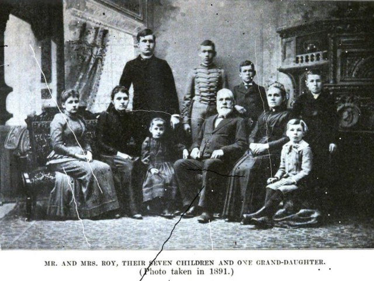

Unfaded
Restore old family photos on your own GPU and see what every step changed.
Finds 12 of 12 prints on synthetic scans and adds +2.2 dB PSNR on known scratch damage.
Restore old family photos on your own GPU and see what every step changed.
Finds 12 of 12 prints on synthetic scans and adds +2.2 dB PSNR on known scratch damage.

Before After